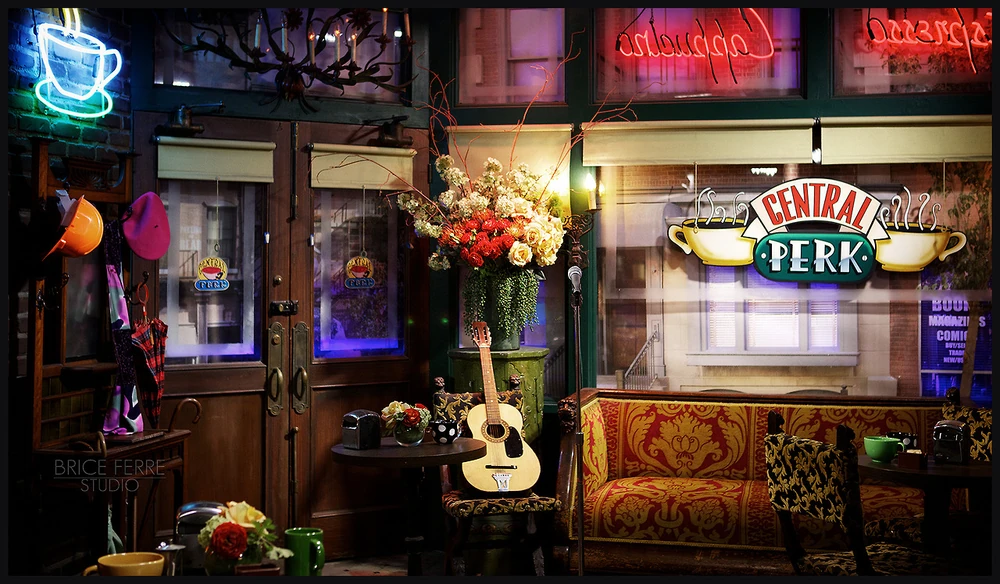
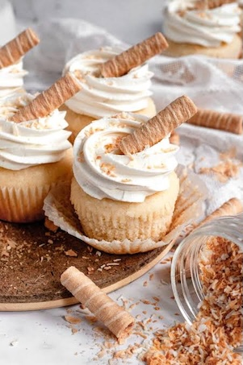

Gourmet Croissants
Golden, flaky layers filled with rich chocolate, creamy pistachio, or savory caprese.

At Central Perk, every cup of coffee and every bite is crafted to brighten your day. From flaky croissants filled with pistachio, chocolate, or caprese, to freshly prepared sandwiches, refreshing juices, muffins, and inclusive cupcakes—including classic, vegan, and gluten-free options—there is always something warm waiting for you with a cozy vibe, inspired by the iconic '90s sitcom Friends.
Learn More About Us
Discover our most loved daily creations
Golden, flaky layers filled with rich chocolate, creamy pistachio, or savory caprese.

Baked fresh every morning in classic, vegan, and gluten-free varieties so everyone can indulge.

Wholesome artisanal sandwiches paired with cold-pressed fruit juices or your favorite espresso drink.
"The pistachio croissant and oat latte are unbeatable, and having delicious vegan and gluten-free cupcakes makes CentralPerk our favorite meeting spot!"— Emma L., Regular Guest